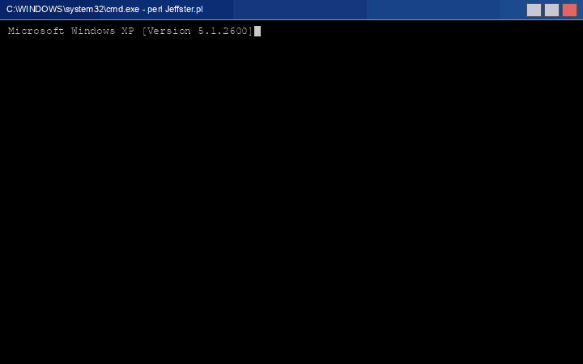

Jeffster.pl
an archaeological report.
A reverse-engineered field guide to the 2,400 lines of Perl a 21-year-old wrote in early 2002 to automate the wholesale scraping of Audiogalaxy. It orchestrated three now-defunct services, invented its own file formats, and committed almost every sin in The Perl Cookbook. This is what it did, and how it did it.
What this thing actually was.
Jeffster is a pipeline of five Perl scripts that automated music piracy in early 2002 — specifically, it turned a plain-text list of artist names into an organised library of MP3s sitting in correctly-named folders on a Windows drive.
It did this by stringing together three separate web services that had no idea they were being strung together:
CDnow for discographies, FreeDB for CD tracklistings, and
Audiogalaxy for the peer-to-peer downloads themselves. The glue was
LWP::Simple, a thicket of regex, and four text files that doubled as both state-store
and inter-process message queue.
"You give me a text file of 800 artist names. I'll give you back a Windows drive full of albums." — The Jeffster value proposition, circa March 2002
Here's what a session actually looked like.
Before the architectural diagrams and the code snippets, here's the part that matters most —
what it felt like to sit in front of a Dell running Windows XP in March 2002 and use this thing.
Below is a faithful reconstruction: a cmd.exe session running
Jeffster.pl through three artist searches, picking four albums across
them, and triggering the download phase.

masterArtistList.csv),
four albums queued (Forever Changes, The Album, Chocolate and Cheese,
The Mollusk), then D to download. Compressed to 28 seconds;
in real life each "Listing results" page took 20–30 seconds because the script opens a second
HTTP request to FreeDB for every single row just to count tracks.
- Search phase — you type an artist name, FreeDB returns a list of albums; you type a row number to queue it. The red
**** JUST ADDED *****marks your last pick on the re-draw. - Navigation —
Aends the current artist and loops back to the "enter artist name" prompt;Dends the whole search phase and begins downloading. - Download phase — Jeffster walks each queued album, searches Audiogalaxy for each track, prints
Track.mp3: 4with the star rating, then theTransferring / Processing / Busy / Offlinestatus ticker, then the destination directory (!Artist - Album (n of m)— the bang prefix meaning "incomplete").
The full walk-through of each script is in
Section 07;
the code behind the **** JUST ADDED ***** state machine is in
Jeffster.pl's three-label goto dance.
The three services it glued together.
Every single external service this script talks to has been dead for at least 20 years. This is what they were, and what they did for us.
The peer-to-peer download engine.
A P2P music service with a genuinely novel architecture: a client-side "Satellite" daemon managed local
transfers, and a central web interface orchestrated the queue. Crucially, you could enqueue songs via
plain old HTTP GETs against audiogalaxy.com/satellite/queue.php as long
as you included your session ID. Which is exactly what made Jeffster possible.
The RIAA sued them in May 2002. By June, they had settled and effectively shut down. Jeffster's useful life therefore clocks in at roughly three months.
The discography source.
An online music retailer (think: pre-iTunes Amazon for CDs). Jeffster only cared about two of its pages: the artist search endpoint and the discography page, both of which it scraped by regex to get canonical album titles and tracklists.
Amazon absorbed CDnow in 2002 and folded the brand in 2003. The URLs in this codebase
(cgi-bin/mserver/SID=1188262721/pagename=/RP/CDN/FIND/…) haven't resolved since.
The tracklist fallback.
The open-source CD database — the thing that filled in track names when you inserted a CD into Winamp.
The interactive version of Jeffster (Jeffster.pl) queried FreeDB directly
so the user could pick the specific album release they wanted.
How the whole machine fit together.
Three web services, five Perl scripts, four text files, and one very patient Windows XP tower running with
G:\shared\ as an Audiogalaxy Satellite download target.
Note the crucial detail: the five scripts don't talk to each other. They communicate entirely through
Queue.txt, which is read by FileSync.pl in an
entirely separate process. The text file is the message bus.
The 2002 interface, exactly as it was.
In March 2002 — three months before Audiogalaxy died — I took a run at wrapping Jeffster in a human interface.
turnIntoHTML.pl reads masterArtistList.csv
(10,907 rows; a cached snapshot of every artist Audiogalaxy knew about plus their popularity rank 11–25),
filters down to the top-200 rank-25 artists, and emits a two-frame browser UI: artist list on the left,
whichever page you last clicked on the right.
Below is a faithful reconstruction. The rating GIFs, the Audiogalaxy and CDnow brand glyphs, the alternating grey rows, the 240-pixel blue title bar — all of it is the actual HTML/GIF data from 2002, rendered in 2026.
| 883 | |||
| 13th floor elevators | |||
| 2gether | |||
| 3 dog night | |||
| 808 state | |||
| … 195 more artists below … | |||
The two icon columns next to each artist are deep links:
 takes you to Audiogalaxy's page for that artist (using the ID from the CSV), and
takes you to Audiogalaxy's page for that artist (using the ID from the CSV), and
 runs a search on CDnow (using the artist's name string-interpolated into the URL). Both links are dead now.
runs a search on CDnow (using the artist's name string-interpolated into the URL). Both links are dead now.
The rating icons, explained.
The third column in every row of the table is one of five tiny 16×16 GIFs that came from Audiogalaxy's own
assets — I kept copies so my UI would match theirs visually. Each one encoded how likely Audiogalaxy was to have
a high-quality source for that artist; enqueueSong looks for the same GIF names when
picking which search result to download.


The ranking ladder is encoded directly in the regex from
jeffster1.2.pl: it greps the search result page for 4_0.gif first
and only falls back to 3_0.gif, then 2_0.gif, then
1_0.gif (marked as a failure and written to errors.csv). The UI on this page
is displaying the same raw asset bytes that enqueueSong was grepping for inside Audiogalaxy's HTML.
z_0.gif variant (zero bars, faded triangle) marks artists that had no sources at
all. Very late-90s Geocities energy. The dithered edge on the triangle is still there if you zoom in.
The HTML generator, in full.
open(OUT, ">leftFrame.htm"); print OUT "<html><title>Master Artist List -- Jeffster 1.1</title>..."; close(OUT); open(IN, "<masterArtistList.csv"); $num = 0; while (<IN>) { /([^,]+),(\d+),(\d+)/; $artist = $1; $ID = $2; $rank = $3; if ($rank > 24 && $num < 200) { $num++; open(OUT, ">>leftFrame.htm"); print OUT "<tr"; if ($num % 2 == 0) { print OUT " bgcolor=\"#CCCCCC\""; } print OUT ">\n"; print OUT "<td><b>$artist</b></td>\n"; print OUT "<td><img src=\""; #if ($ID < 13) { print OUT "z_0.gif"; } #elsif ($ID < 16) { print OUT "1_0.gif"; } #elsif ($ID < 19) { print OUT "2_0.gif"; } #elsif ($ID < 22) { print OUT "3_0.gif"; } #else { print OUT "4_0.gif"; print OUT "\"></td>\n"; # ...emit AG deep-link and CDnow search-link <td>s... } } print OUT "</table></body></html>"; close(OUT);
$ID — never finished, so every artist just gets the 4-bar icon. Note the stray orphaned else { block that was supposed to wrap a conditional that no longer exists.Everything on disk, explained.
A complete tour of every file in the project directory, in the order you'd encounter them.
The five scripts, walked through.
The batch workhorse // jeffster1.2.pl
The oldest, ugliest, and most capable script. Given artistList.txt containing
one artist per line (optionally Artist > Album to narrow it), it:
- Pops the top line off
artistList.txt. - Hits CDnow to resolve the canonical artist name (and tries again if CDnow's spelling doesn't match).
- Pulls the full discography page and regex-extracts every album URL.
- For each album, pulls the tracklist and populates a 2-D array indexed by album and track.
- For every track, searches Audiogalaxy for the best available source and enqueues it.
- Writes an .m3u playlist and appends to Queue.txt.
The heart of it is enqueueSong, which does a ranking dance based on the number
of "bars" Audiogalaxy assigned to each search result (4_0.gif = 4 bars, best):
# choose the best ranking song from the list of search results if (/4_0.gif[^\?]+\?SID=$SID&g=([\d]+)/) { $songID = $1; $errorMark = 4; } elsif (/3_0.gif[^\?]+\?SID=$SID&g=([\d]+)/) { $songID = $1; $errorMark = 3; } elsif (/2_0.gif[^\?]+\?SID=$SID&g=([\d]+)/) { $songID = $1; $errorMark = 2; } elsif(length($_) != 0) { # ...record the failure in errors.csv and give up $errorMark = 1; }
After each batch of tracks is enqueued, the script prints a live status line that tells you how the Audiogalaxy
Satellite queue is doing. The implementation is four sequential regexes, each greping for
counts on the same page:
$URL = "http://www.audiogalaxy.com/satellite/queue.php?SID=" . $SID; $_ = get($URL); /(\d+) transferring/g; print "Transferring: $1"; /(\d+) processing/g; print " -- Processing: $1"; /(\d+) busy/g; print " -- Busy: $1"; /(\d+) offline/g; print " -- Offline: $1\n";
Transferring: 3 -- Processing: 1 -- Busy: 0 -- Offline: 7, which is exactly what I stared at for hours.// FIX THIS SHIT #333333"><B><B>White Stripes&n —
a note-to-self left in production after CDnow returned bolded artist names in a format the regex didn't anticipate.
Three years later, nobody fixed it.
The interactive picker // Jeffster.pl
A nicer, FreeDB-backed UX. You type an artist, it shows you paginated albums with their track counts, and
you can build up a queue interactively by typing numbers. When you type D, it
stops asking and starts downloading.
The UX is entirely implemented with <STDIN>, chomp,
and — critically — goto labels:
beginning: {
$offset = 1;
print "\nPlease enter artist name,\n...OR press D to begin downloading albums: ";
$prompt = <STDIN>;
chomp($prompt);
if ($prompt ne "D" && $prompt ne "d") {
# ...search FreeDB...
displayTitles: {
# ...print 15 results...
$prompt = <STDIN>;
chomp($prompt);
}
if ($prompt eq "" && $offset < $i-15) {
$offset += 15;
goto displayTitles; # NEXT PAGE
}
elsif ($prompt =~ /\d/) {
# ...queue the album...
goto displayTitles; # KEEP PICKING
}
elsif ($prompt eq "A" || $prompt eq "a") {
goto beginning; # NEW ARTIST
}
}
else { goto beginDownload; } # START WORK
}
gotos, three labels, no while loop. This is how state machines looked before anyone told me about state machines.For what this actually felt like to use, see the captured session up top in Section 02.
The sampler // SampleArtist.pl
Take a list of artists. For each one, enqueue the $sampleNumber highest-rated
tracks Audiogalaxy knows about. It's the 2002 version of "Artist Radio."
Its cleverest trick: deduplication. Before enqueueing a track, it greps Queue.txt
for a fuzzy match on the song name (using the song title's first five characters plus the separator)
so the same song doesn't get queued twice from two different sampling passes.
$dontEnqueue = 0; open(CHECK, "<" . $directory . "Queue.txt"); while (<CHECK>) { if (/$songCheck2/) { $dontEnqueue = 1; print "Duplicate found for: $MP3Title\n"; } } close(CHECK);
The shopping list // songList.pl
The simplest of the bunch. Reads c:\songList.txt — a hardcoded path, note —
one song title per line, and enqueues each. Meant for when a friend handed you a list of songs they wanted.
The janitor // FileSync.pl
The second-half-of-the-pipeline. While the four enqueue scripts fill up Queue.txt with promises, FileSync
actually fulfills them. It reads every line of Queue.txt, scans the Audiogalaxy download folder
(G:\shared\), and for every filename match it finds, it moves the file to its
proper Artist/Album folder.
The beautiful part: the convention for "album complete" is just the presence of an exclamation mark at the start of the album folder name.
# if complete (no other queued files belong to this album) if ($albumMarker == 0) { # if not sample artist if ($tempPath =~ /!/) { $tempPath1 = $tempPath; $tempPath =~ s/!//; rename($tempPath1, $tempPath); print "completed $tempPath\n"; } }
! are incomplete and sort to the top of Explorer. Strip the bang and the album joins the library proper.The frameset generator // webpage/turnIntoHTML.pl
Takes masterArtistList.csv — a 240KB cache of ~12,000 Audiogalaxy artists, each
with an internal ID and a popularity rank — and emits an HTML file with deep links into Audiogalaxy and CDnow
for the top 200 most popular artists. The left frame; the right frame was whichever artist you most recently clicked.
open(OUT, ">leftFrame.htm"); print OUT "<html><title>Master Artist List -- Jeffster 1.1</title></head>..."; close(OUT); open(IN, "<masterArtistList.csv"); $num = 0; while (<IN>) { /([^,]+),(\d+),(\d+)/; $artist = $1; $ID = $2; $rank = $3; if ($rank > 24 && $num < 200) { $num++; open(OUT, ">>leftFrame.htm"); # ...emit <tr> with alternating gray rows, deep links to AG + CDnow... } }
opens, prints, and closes the output file once per row. 200 opens and 200 closes. Disk cache forgives a lot.Four file formats I invented on the spot.
I couldn't be bothered with any existing serialization format, so every on-disk data structure is custom. They all work. None of them are good.
Config.txt // trailing-hash-delimited KV
Home Directory: C:\Jeffster\ # Destination Directory: G:\MP3s\ # Download Directory: G:\shared\ # SID: 307908cbb6fff10bf0083932a95aeb4a # Number of Songs: 37 #
sub configVals { open(CONFIG, "<config.txt"); while (<CONFIG>) { if (/Home Directory: ([\w\W]+) \#/) { $directory = $1; } if (/Destination Directory: ([\w\W]+) \#/) { $destinationDirectory = $1; } if (/Download Directory: ([\w\W]+) \#/) { $downloadDir = $1; } if (/SID: ([\w\W]+) \#/) { $SID = $1; } } close(CONFIG); }
[\w\W]+ — which is just a byte-vomit of "any character at all." .+ would have done the same job with fewer keystrokes, but younger-me didn't know . excluded newlines.Queue.txt // <s> and <d> delimiters
The whole download queue is a line-delimited file where each record has two fields separated by the
literal string <s> (start path) and terminated by <d>
(done). No escaping. No quoting. Good luck if a filename contains those substrings.
unburned - Pink Missundaztood 06 18 Wheeler.mp3<s>G:\MP3s\!Pink - Missundaztood (8 of 14)\<d> Pink ~ M!ssundaztood - Just Like A Pill.mp3<s>G:\MP3s\!Pink - Missundaztood (8 of 14)\<d> Pink Missunderstood - Respect.mp3<s>G:\MP3s\!Pink - Missundaztood (8 of 14)\<d> r&b~rap - Pink--3-18 Wheeler.mp3<s>G:\MP3s\!Pink - Missundaztood (8 of 14)\<d> pink - Misery Feat. Steve Tyler & Richie Sambora.mp3<s>G:\MP3s\!Pink - Missundaztood (8 of 14)\<d>
errors.csv // partial structure, partial freeform
CSV-ish. Four fields: song,artist,album,code. The code is one of:
0 (searched, got no usable result), 1 (only a
one-star result was available), or xxx (Audiogalaxy asked you to broaden your
search — i.e. zero hits). None of these are documented anywhere except the two elses in
enqueueSong.
albumList.txt // < delimiter
The queue consumed by the interactive Jeffster.pl. Each line: FreeDB URL suffix, album name, artist name,
separated by literal <:
?cat=rock&id=d6097f10<White Blood Cells<The White Stripes ?cat=rock&id=af08d10d<De Stijl<The White Stripes ?cat=rock&id=2503c204<Hotel Yorba<The White Stripes ?cat=rock&id=da0a4311<The White Stripes<The White Stripes ?cat=misc&id=aa0a100c<The Guest<Phantom Planet
$albumArray // a 2D array with the schema in an ASCII-art comment
The most elaborate in-memory data structure Jeffster ever built is
@albumArray — a 2D ragged array that encodes an entire artist's discography,
with different rows meaning different things. There's no struct, no hash-of-hashes — just raw integer
coordinates and a hope that future-you remembers what goes where. Future-me helpfully left a diagram in
the source:
##################################### # subroutine to retrieve album data for a given artist from CDnow.com # and given a artist/album combo, ##################################### # outputs 2D array: # [number of albums] # [artist] # [title of album1 2 0] [title of album2 2 1] ... # [track 1 - 3 0] [track 1] # [track 2] [track 2]... sub getAlbumInfo { # ... }
2 0, 3 0) are the row/column indices for
where that value lives. Row 0 is a scalar (album count). Row 1 is a scalar (artist name). Row 2 is an array
indexed by album. Row 3+ are parallel arrays of tracks per album. The "type definition" lives exclusively here.info.txt // starred-banner human-readable output
There's also printTitles, a sub that dumps @albumArray
into a plain-text report for after-the-fact sanity checking. It uses a format you'd recognise if you've ever
seen a README.TXT from the BBS era:
sub printTitles { open(INFO, ">>" . $directory . "info.txt"); for ($i = 0; $i < $numberOfAlbums; $i++) { print INFO "** $artist - $albumArray[2][$i] *********\n"; $j = 3; while ($albumArray[$j][$i] ne "") { print INFO $j-2 . " - $albumArray[$j][$i]\n"; $j += 1; } } close(INFO); }
** Artist - Album *********) followed by
numbered tracks. No one ever read the output. The info.txt file isn't even in the repo.Who 21-year-old me was actually downloading.
Every artist below appears in at least one of the work-queue files still on disk —
albumList.txt, sampleArtist.txt,
errors.csv, or Queue.txt. Their presence in these
files is a small frozen archive of what I was listening to (or trying to listen to) on the last weekend
Jeffster ran in March 2002. The mix is embarrassingly eclectic. I stand by every pick.
The White Stripes
garage rock · indie bluesJack and Meg White, pretending to be siblings. Four LPs in, already canonical — but Elephant and "Seven Nation Army" wouldn't land for another year. I was queueing them right before they broke through.
Phantom Planet
power-pop · indieThe Guest, released December 2001. Contains "California," which 18 months after this queue entry became the theme song for The O.C. and lodged permanently in American teen-TV history.
Pink
pop · pop-rockMissundaztood, 2001. "Get the Party Started," "Don't Let Me Get Me," "Family Portrait." She had just pivoted from teen R&B to Linda Perry-produced rock-pop and the album lived in every car.
Sonic Youth
noise rock · no-waveThurston Moore, Kim Gordon, Lee Ranaldo, Steve Shelley. Twenty years deep by 2002 and still putting out Murray Street. Sampling this band meant being willing to download 9-minute guitar-squeal tracks, which Audiogalaxy did not rank highly.
The Traveling Wilburys
supergroup · rockGeorge Harrison, Bob Dylan, Roy Orbison, Tom Petty, Jeff Lynne. That is the lineup. Two albums, both brilliant, and a stubborn refusal to take themselves seriously. By 2002, Orbison and Harrison were gone.
Mos Def
hip-hop · conscious rapBlack on Both Sides had been out for two and a half years. Political, literary Brooklyn rap — the stuff I downloaded because I was reading The Source and trying to have opinions. Now goes by Yasiin Bey.
Neneh Cherry
hip-hop · trip-hop"Buffalo Stance" (1988) was one of the first hip-hop singles to truly cross over in the UK. Stepdaughter of jazz trumpeter Don Cherry. She had basically vanished from radio by 2002, which is probably why she was in the sample batch.
Albert King with Stevie Ray Vaughan
bluesThe In Session recording. A blues summit: the left-handed Flying V patriarch and the Austin prodigy. By 2002 both men had been dead for over a decade. I was very into sad guitar music.
Jethro Tull
prog rock · folk rockIan Anderson on flute, standing on one leg. A flute prog-rock band — in 2002, already a bit of a punchline, but the deep-cuts still rule. Jeffster tried to grab twelve tracks and nine of them failed. The deeper the cut, the worse the search.
Faith No More
alt-metal · funk-metalMike Patton's band. "Epic" (1989) made them MTV regulars; Angel Dust (1992) made them weird. The two queued tracks ("This Guy's In Love With You" and "I Want Forget You") both failed to download — probably the wrong capitalization killed the search.
Jeff Healey Band
blues-rockCanadian blues guitarist who played with the guitar flat across his lap. The theme-song bar band in the 1989 Swayze movie Road House. Died too young in 2008.
Cannonball Adderley Quintet
hard bop · soul jazzAlto sax. "Mercy, Mercy, Mercy" (1967) and a career playing with Miles Davis on Kind of Blue. Quintet includes his brother Nat on cornet. Me putting this in the sample batch is the tell that I was trying to seem cooler than I was.
The full sample batch had 32 artists. Other cameos include Ned's Atomic Dustbin, Spooky Tooth, Peter Himmelman, The Traveling Wilburys, Gerard Joling, Shankar Mahadevan, and (surprisingly) Steven Curtis Chapman. The queue was not especially internally consistent. It was the queue of someone trying to find out what they liked.
errors.csv is a 46-line confession: every track Jeffster searched for and couldn't
get a usable result. Alongside the Pink and Jethro Tull misses, it contains a full classical guitar recital
by Jani Potter (Heitor Villa-Lobos, Joan Tower, Ravel, Bach BMV 996 four-movement suite) — none of which
Audiogalaxy had. Some queries were just never going to work. That's on me, not Jeffster.
Things 21-year-old me did that deserve to be remembered.
With great affection and the full benefit of 24 years of hindsight. None of these were wrong, exactly — they worked — but they are all profoundly from the before-times.
-
No
use strict. Anywhere.Every variable is a global. Every typo is a silent NUL. Functions clobber each other's state.$iis used as a loop variable in at least four different subs, which all mutate the same global. The only reason this doesn't fall apart is that the call graph is linear — one sub doesn't re-enter another while a third is still running. -
HTML parsed with regex.Every one of Jeffster's data sources is scraped with regexes like
/#FFFFFF;\">([^<]+)<\/span>([^<]+)<\/span>/. The entire pipeline is implicitly coupled to Audiogalaxy's exact CSS choices. Change the background colour of a<span>and the downloader dies. -
Control flow via
goto.Jeffster.pl's main loop is three nested labels —beginning:,displayTitles:,beginDownload:— withgotostatements threading between them. Awhile(1)and alastwould have sufficed. I didn't know aboutlast. -
Hardcoded session IDs in URLs.Look closely at the CDnow URLs:
cgi-bin/mserver/SID=1188262721/…. That1188262721is someone's session ID, captured once from a browser and pasted into the source. Every request is pretending to be whoever that was. It works until it doesn't. The AudiogalaxySIDin Config.txt at least admits it's a SID. -
The "just
sleep 5" school of synchronization.The Audiogalaxy queue takes a moment to register a request, soenqueueSongissues a GET, sleeps 5 seconds, then re-fetches the queue page to check if it succeeded. If not, it retries, and sleeps another 5. The best songs sometimes took a full minute to enqueue. Over 14 tracks that's 14 minutes per album. Over 12 albums that's a whole afternoon. -
Four near-identical copies of
configVals.Jeffster.pl,jeffster1.2.pl,SampleArtist.pl,songList.pl, andFileSync.pleach contain their own copy-pastedsub configVals. Five copies. When I addedNumber of Songsto Config.txt, I only remembered to update one of them. -
2-D arrays with the schema in a comment.
$albumArrayis indexed[row][column]where row 0 is album count, row 1 is the artist name, row 2 is album titles, and rows 3+ are tracks. The "type definition" lives exclusively in an ASCII-art comment above the sub. Row 0 is scalar. Rows 2+ are arrays. Row 1 is a single string. Everything about this is wrong. -
State stored as filesystem mutations.To "consume" an item from the work queue, the script opens
artistList.txt, reads every line, truncates the file, and rewrites it minus the top line. If the process crashes halfway through, you've lost state. There was no recovery mechanism. There didn't need to be — you just reran it. -
Windows paths everywhere, backslashes and all.
G:\MP3s\!+ artist +\\. Strings like"C:\Jeffster\"— which in any double-quoted Perl string is a real backslash-escape that the interpreter silently lets slide because\Jisn't a known escape sequence. One of the reasons this only ever ran on my Dell. -
The filename-sanitising tr.
$MP3Title =~ tr/[:\*\?\"|]/\-/;— an attempt to strip characters that are illegal in NTFS filenames. Excepttrdoesn't take character classes, so the literal characters[and]are also in the set being replaced. So were\and", but not/, which is the actually dangerous one. It mostly worked by accident.
What happened next.
May 24, 2002. The RIAA filed suit against Audiogalaxy. By June they had settled; by the end of the summer the service was effectively dead. The Satellite daemon kept running for a while on a lot of computers, but it had nothing to talk to.
July 2002. Amazon absorbed CDnow for $36 million. The discography URLs Jeffster depended on — all of
which were routed through that
cgi-bin/mserver/SID=…/pagename=/RP/CDN/FIND/…
rigmarole — stopped resolving shortly afterward.
Late 2000s. FreeDB was superseded by its successor Gracenote CDDB and eventually by MusicBrainz, and limped along in various forks before its servers went cold around 2020. The specific query format Jeffster used had stopped being reliable much earlier.
Every script in this repository was finalised in March 2002. The only commits after that — in January 2015 and today — are me rediscovering this directory and being equal parts horrified and charmed.
The code still runs. It just has nothing left to talk to.